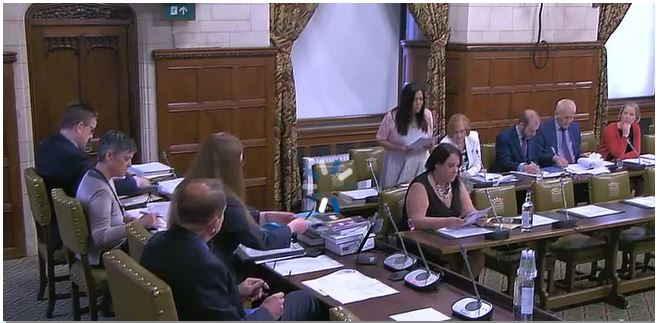

Videos & Media
IMMDSR - Oral Hearings
20th May 2019
IMMDSR - Oral Hearings
14th May 2019
Video of Westminster Hall Debate
23rd April 2019
IMMDSR evidence - Marie Lyon
14th March 2019
Personal testimony 'The Bagley Family'
7th March 2019
Expert Working Group Evidence
28th January 2019
Sky Report - PM vows to review new evidence on pregnancy pill Primodos
17th January 2019
IMMDSR evidence - Neil Vargesson
27th November 2018
IMMDSR evidence - Prof. John Abraham
27th November 2018
IMMDSR evidence - Carl Heneghan
27th November 2018
Sky Report - Oxford University study links pregnancy drug Primodos to birth defects
27th November 2018
IMMDSR evidence - Dr. Jesse Olszynko-Gryn
26th November 2018
IMMDSR evidence - Jason Farrell
26th November 2018
IMMDSR evidence - Marie Lyon, Daniel Mason & Nikki Gubbins
26th November 2018
ITV News - PM Orders review into Primodos/Mesh/Valproate.
21st February 2018
Sky Views - Is the Primodos report a 'whitewash'?
14th December 2017
Sky Views - Primodos report 'irresponsible & questionable' (Neil Vargesson)
22nd November 2017
Yasmin Qureshi Question on the EWG Report. Hansard
16th November 2017
Sky Documentary - Calls for public inquiry over Primodos pregnancy drug after Sky News documentary
22nd March 2017
Primodos: The Secret Drug Scandal - Sky News Documentary
21st March 2017
Primodos: Sky News exposes pregnancy drug cover-up
19th March 2017
The Contested History of Hormone Pregnancy Tests conference (Cambridge)
27th January 2017
Radio Interview with Marie Lyon in Germany
Marie Lyon's appearance on Sky News talking about Primodos
18th June 2014
LWT Documentary
13th April 1978
Association Photos